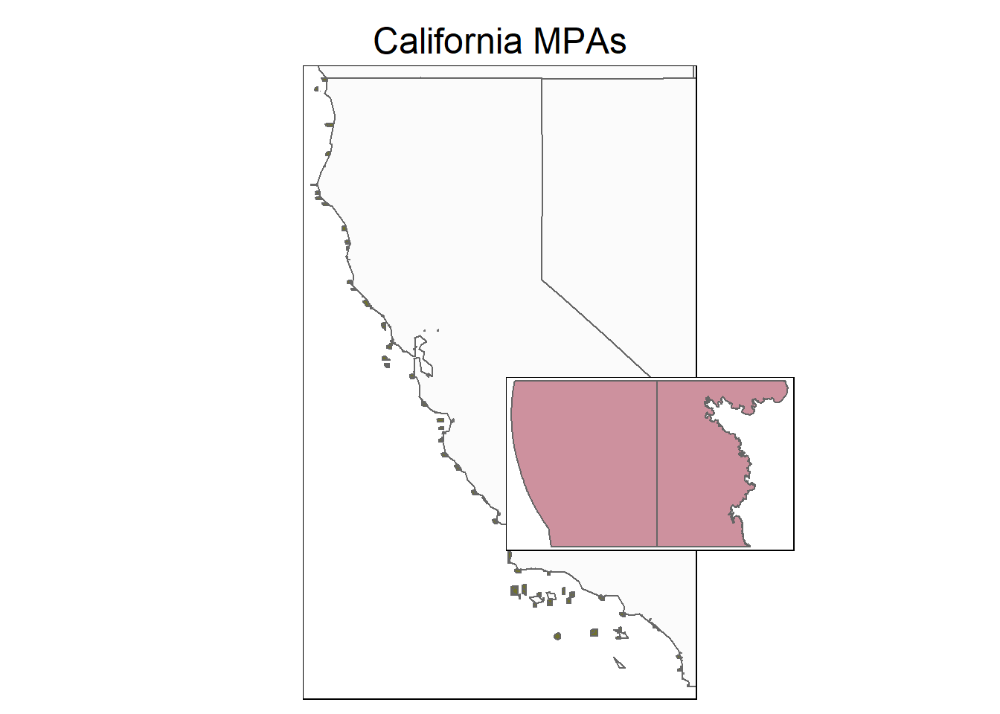
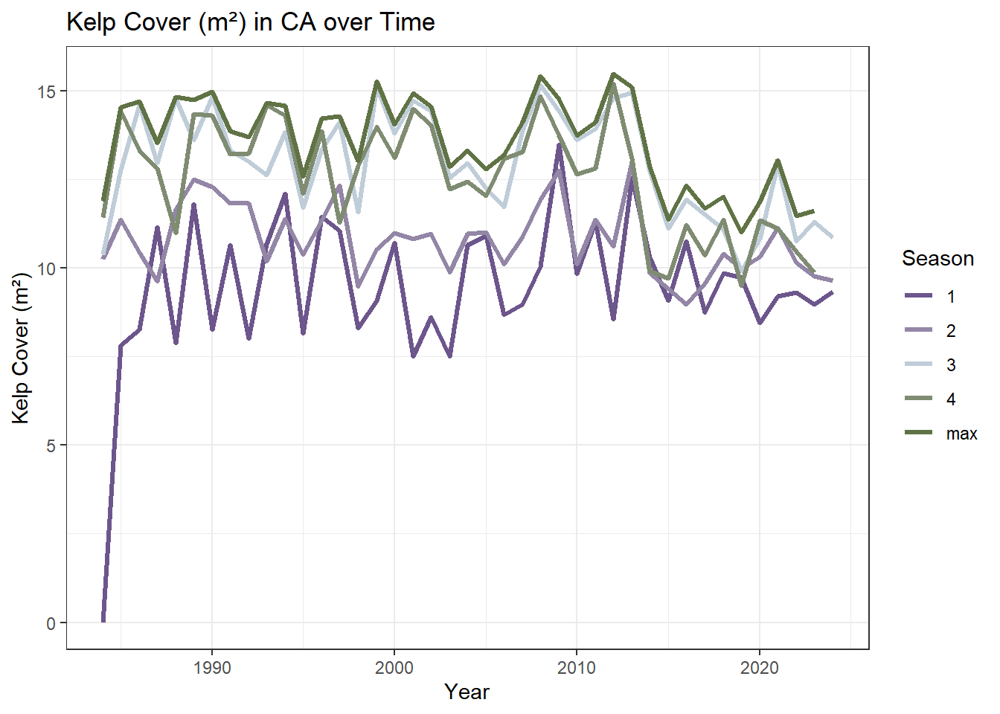

Reading layer `California_Marine_Protected_Areas_[ds582]' from data source
`C:\MEDS\EDS-240\jorgensen-eds240-HW4\data\MPA_boundaries\California_Marine_Protected_Areas_[ds582].shp'
using driver `ESRI Shapefile'
Simple feature collection with 155 features and 13 fields
Geometry type: MULTIPOLYGON
Dimension: XY
Bounding box: xmin: -13862910 ymin: 3833459 xmax: -13038160 ymax: 5160985
Projected CRS: WGS 84 / Pseudo-MercatorHW#3 - Drafting Viz
- Which option do you plan to pursue? It’s okay if this has changed since HW #1.
I still intend to pursue option 1, which is creating an infographic
- Restate your question(s). Has this changed at all since HW #1? If yes, how so?
Based on how data exploration is going so far, as well as changing interests of mine, I have decided to change the question that I am asking with my data. Rather than try to examine kelp coverage over time, I am going to explore understanding kelp coverage in the present day, and how kelp coverage is represented in MPAs.
Specifically, my new question will be: Does emergent kelp coverage receive protection in California MPAs?
- Explain which variables from your data set(s) you will use to answer your question(s), and how.
Kelp coverage is variable, and changes by season. So, the dataset I have is divided into ‘quarters’ for each year. I will calculate the maximum extent of kelp for the year 2024, which is the most recent complete year in the dataset. That is the variable I will use for the map portion of the infographic. For the sorted stream graph, I will pull the variables that represent the max extent for each of the four seasons represented in 2024.
Next, I have a shape file that contains all of the current boundaries for California MPAs. (This is a new dataset I am incorporating since the initial proposal. I got it from my capstone client, and have already been working with it, so I know its a good one!) I will use the spatial boundaries from this to overlay the MPAs with the kelp data, in order to do calculations and visualizations about kelp within MPAs, versus kelp outside of MPAs.
Both of these datasets and these variables will be sufficient for all three aspects of my infographic. The map will be the boundaries overlaid with the kelp max-extent data, and will be a visual example of where the MPAs are situated, and how much area they cover. By using the boundaries file to crop the kelp data, I can use map-algebra to calculate the overall percentage of max kelp cover protected inside MPAs, which will inform my pictograph percentage viz. Finally, the sorted stream graph will have the max extents per season over latitude, so viewers can understand how kelp coverage varies so much between season, and also get a sense of the variation up the coast latitude. All in all, the infographic will show how much kelp coverage is protected inside MPAs, and also understand that the variability in canopy coverage has an effect on this number.
- In HW #2, you created some exploratory data viz to better understand your data. You may already have some ideas of how you plan to formally visualize your data, but it’s incredibly helpful to look at visualizations by other creators for inspiration. Find at least two data visualizations that you could (potentially) borrow / adapt pieces from. Link to them or download and embed them into your .qmd file, and explain which elements you might borrow (e.g. the graphic form, legend design, layout, etc.).

I really love this graph, from the datavizproject.com website. I love how it shows area over time, but the disconnect between the colors gives it an airier, more dynamic feel. I think in attempting to replicate it, however, I will choose colors that make the differences between the streams a little more obvious. I will also do area over latitude, instead of time, in order to give a feel for variation in kelp cover across the state (theoretically…)
 {fig-alt=“image of a person silhouette, with a percentage line through it, to visualize a percentage of something.} This viz from the datavizproject.com is simple, but is honestly a great example of what I want to try too, but with a piece of kelp. I have a feeling I’ll have to get a little artsy with this one, but I want to try anyway. Obviously, in my final viz, I will have more text and a title that explains what is actually happening here.
{fig-alt=“image of a person silhouette, with a percentage line through it, to visualize a percentage of something.} This viz from the datavizproject.com is simple, but is honestly a great example of what I want to try too, but with a piece of kelp. I have a feeling I’ll have to get a little artsy with this one, but I want to try anyway. Obviously, in my final viz, I will have more text and a title that explains what is actually happening here.
 {fig-alt=“Picture of a map of the United States, with Texas colored in a different color, and also magnified in a separate cut-out} This viz is from hughjonesd.github.io/ggmagnify, and is a simple but cool example of what I am hoping to achieve. I like that Texas is both colored brightly, and also magnified, though I think the starkness of the red makes the smaller Texas stand out a little too much. But, I like the dotted lines that connect the magnify, and the way that the original map is still clear and readable, despite the cutout.
{fig-alt=“Picture of a map of the United States, with Texas colored in a different color, and also magnified in a separate cut-out} This viz is from hughjonesd.github.io/ggmagnify, and is a simple but cool example of what I am hoping to achieve. I like that Texas is both colored brightly, and also magnified, though I think the starkness of the red makes the smaller Texas stand out a little too much. But, I like the dotted lines that connect the magnify, and the way that the original map is still clear and readable, despite the cutout.
- Hand-draw your anticipated visualizations, then take a photo of your drawing(s) and embed it in your rendered .qmd file – note that these are not exploratory visualizations, but rather your plan for your final visualizations that you will eventually polish and submit with HW #4. You should have:
- a sketch of your infographic (which should include at least three component visualizations) if you are pursuing option 1

- Mock up all of your hand drawn visualizations using code. We understand that you will continue to iterate on these into HW #4 (particularly after receiving feedback), but by the end of HW #3, you should:
- have your data plotted (if you’re experimenting with a graphic form(s) that was not explicitly covered in class, we understand that this may take some more time to build; you should have as much put together as possible)
- use appropriate strategies to highlight / focus attention on a clear message
- include appropriate text such as titles, captions, axis labels
- experiment with colors and typefaces / fonts
- create a presentable / aesthetically-pleasing theme (e.g. (re)move gridlines / legends as appropriate, adjust font sizes, etc.)
Answer the following questions:
What challenges did you encounter or anticipate encountering as you continue to build / iterate on your visualizations in R? If you struggled with mocking up any of your three visualizations (from #6, above), describe those challenges here.
I have been struggling with two main issues - the first being that the KelpWatch dataset that I have is a huge geospatial .nc file, which was not gridded in a way I was familiar with. So, I had to do some wrangling of the kelp data, with the kelp of my capstone client. With her help, I was able to export the 2024 data from the set into a separate .tif file, which made it more manageable, as it filtered out the years I was not interested in for this particular analysis. This was, however, very time consuming. I have not included the code to export the tif here, since its super long and not exactly relevant to the creation of the viz itself, but I can provide it as needed.
The second issue I’ve been having is that the package for the sorted stream graph I was planning on making is not compatible with more recent versions of R. So, I have been trying to think of another way of making it with a different package, or just in ggplot. However, I have not been successful yet, so there is a good chance that I will have to come up with a different visualization…which is fine, but I’ve been stubborn about it!
- What ggplot extension tools / packages do you need to use to build your visualizations? Are there any that we haven’t covered in class that you’ll be learning how to use for your visualizations?
Well, its the streamgraph library that I was planning on using, but has since been depreciated. There is also a ggmagnify package that I was planning on using for the map visuzalization, but I ended up not going with it, and instead just playing around with layering maps, using tmaps and ggplot. So far I am not happy with the effect, but was able to get further doing it that way, than I was with the package.
- What feedback do you need from the instructional team and / or your peers to ensure that your intended message is clear?
I want to make sure that my viz clearly explains the state of kelp coverage today, and its relationship to MPAs. I am worried that at this point, by visuzalizations are too simplistic, but I am hoping they will continue to improve until the message is clear
Here is the code and output for my first viz, the map! It is still very rough…I am still struggling with getting the dotted lines on the plot, and am still having some issues with mapping out the kelp data in the small zoomed in plot.
# Base map with MPAs and US states
rough_mpa <- tm_shape(mpa_boundaries) +
tm_polygons(col = "#71722b") +
tm_shape(us_states) +
tm_polygons(alpha = .10) +
tm_layout(main.title = "California MPAs",
main.title.position = "center")
# Filter for Point Lobos
point_lobos <- mpa_boundaries[mpa_boundaries$SHORTNAME == "Point Lobos", ]
# Inset map for Point Lobos
inset_map <- tm_shape(point_lobos) +
tm_polygons(col = "pink3") +
tm_layout(bg.color = "white") # Ensure background visibility
# Plot main map
tmap_mode("plot")tmap mode set to plottingprint(rough_mpa)
# Add inset map using viewport
vp <- viewport(x = 0.8, y = 0.2, width = 0.3, height = 0.3, just = c("right", "bottom"))
print(inset_map, vp = vp)
Here is my second visualization. It is simple, but I feel like I need a visualization that shows the single percentage of kelp protected within MPAs, since that is a big main take away of the viz in general, and I think that showing it will make sure the message is conveyed.

Since my stream graph is falling through, I’m scrambling a bit to find something different. Even though for the main viz I’m only interested in the year 2024, I did want to think of a way to visualize the changing seasons, and how variable kelp coverage is throughout a year, since it is so season dependent. So, I made this line chart, based on the viz I made for homework 2. I think its close to telling the story that I want it too, but I want to keep fiddling with it. Also, I have to decide how it will fit into my vision of the final infographic, as opposed to the stream graph.
# Read in csv
north_kelp <- read_csv(here("data", "northern_california_kelp.csv"))Warning: One or more parsing issues, call `problems()` on your data frame for details,
e.g.:
dat <- vroom(...)
problems(dat)Rows: 203 Columns: 6
── Column specification ────────────────────────────────────────────────────────
Delimiter: ","
chr (1): quarter
dbl (4): year, kelp_area_m2, count_cells_kelp, count_cells_no_clouds
num (1): count_cells_historic_footprint
ℹ Use `spec()` to retrieve the full column specification for this data.
ℹ Specify the column types or set `show_col_types = FALSE` to quiet this message.north_plot <- ggplot(na.omit(north_kelp), aes(x = year, y = log1p(kelp_area_m2), color = quarter, group = quarter)) +
geom_line(size = 1.2) + # Increase line thickness
theme_bw() +
scale_color_manual(values = c("#6C568CFF", "#9386A6FF", "#BFCDD9FF", "#7F8C72FF", "#607345FF")) +
labs(title = "Kelp Cover (m²) in CA over Time",
x = "Year",
y = "Kelp Cover (m²)",
color = "Season") # Legend titleWarning: Using `size` aesthetic for lines was deprecated in ggplot2 3.4.0.
ℹ Please use `linewidth` instead.north_plot
Here is the code for the streamgraph…as I said, the package is not working as intended. I haven’t given up on the stream graph concept quite yet, so I am still fiddling with it..
# Library
# library(streamgraph)
#
# # Create data:
# data <- data.frame(
# year=rep(seq(1990,2016) , each=10),
# name=rep(letters[1:10] , 27),
# value=sample( seq(0,1,0.0001) , 270)
# )
#
# # Stream graph with a legend
# pp <- streamgraph(data, key="name", value="value", date="year", height="300px", width="1000px") %>%
# sg_legend(show=TRUE, label="names: ")